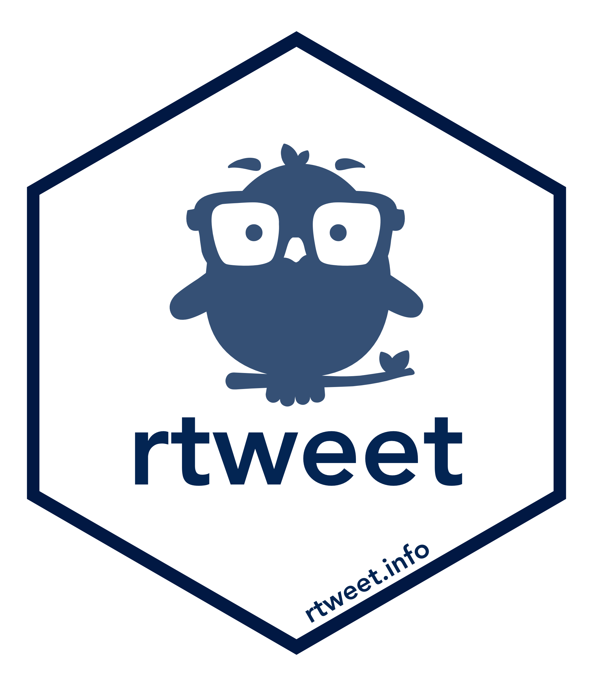
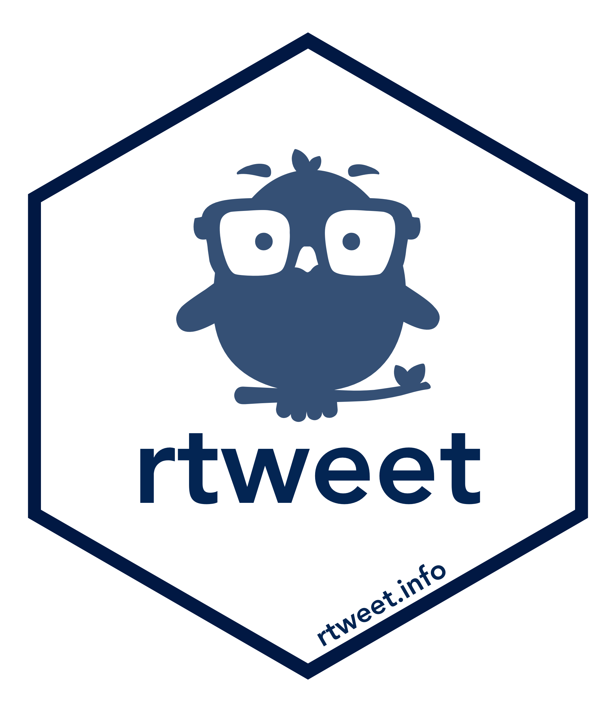
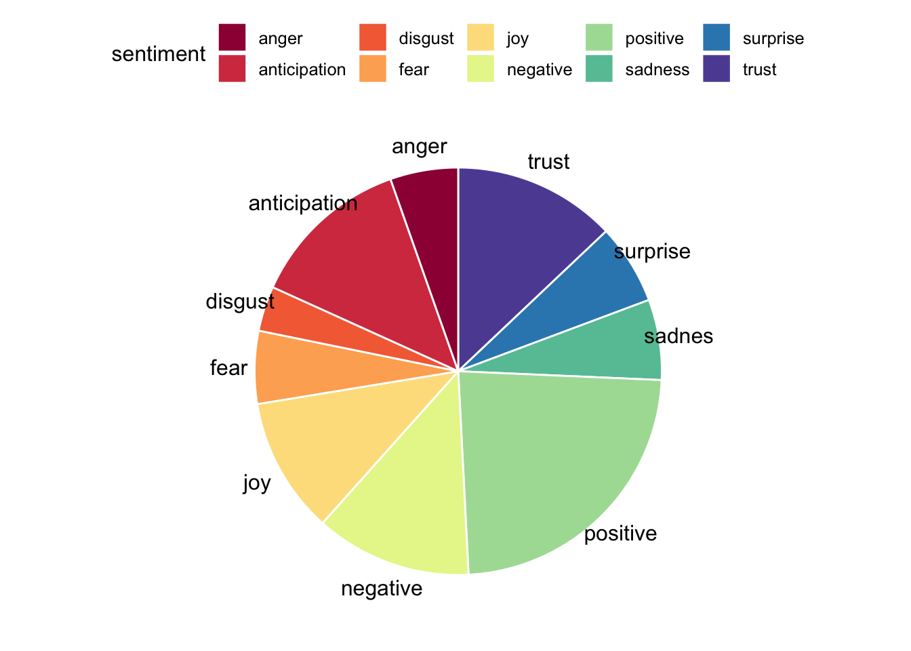

Scraping and Visualising Twitter Data
 

Packages
This section loads the rtweet, tidytext, ggpubr and the tidyverse packages.
Introduction
In the previous sessions, we have already had some practice with ggplot2 and with tidytext. Now we are going to learn how to scrape data from Twitter with the rtweet package and use this in conjunction with our new text wrangling skills. All that is needed is a Twitter account, and we are good to go.
- After loading the rtweet package, you will need to open up Twitter in your browser for the authentication process (allowing RStudio to interact with Twitter’s API).
rtweetwill only work via a desktop RStudio connection, and won’t work if you run it in for example RStudio Cloud or via a server connection.
We can get the entire timeline of any Twitter user (including yourself). One of my most favorite Twitter accounts is the Lego Grad Student, who chronicles his struggles as an early career researcher in tweets and pictures.
Download tweets
We can download up to 3200 of lego grad student’s most recent tweets.
Let’s have a look at the dataframe. You can use view(lego) or click on the lego object in the environment.
Take a moment to explore this dataframe, have a look at what kind of variables there are and which ones might be interesting to explore later on. If you want to get a quick overview of a dataframe you can use head(), which returns the first few rows and tells you how many variables there are in total.
Tidy tweets
We see that 88 variables were imported. We want to select only variables (=columns), that we are interested in at the moment. The column we are most interested in is lego$text. This column contains the actual tweets. Then we need to make the data tidy, e.g. restructure it into a long format (one word per row).
# We need to restructure lego as one-token-per-row format
tidy_tweets <- lego %>% # pipe data frame
filter(is_retweet==FALSE)%>% # only include original tweets
select(status_id,
text)%>% # select variables of interest
unnest_tokens(word, text) # splits column in one token per row formatCheck if it worked:
Stop words
When we process text, we filter out the most common words in a language. These are called stop words (for example “the”, “is” and “at”).
| word | lexicon |
|---|---|
| a | SMART |
| a’s | SMART |
| able | SMART |
| about | SMART |
| above | SMART |
| according | SMART |
Here we define our own custom stopwords. These are specific to dealing with internet data. We want to filter out everything referencing websites and URLs. We use the tibble() function to construct a dataframe containing our custom internet stop words and define the name of our lexicon. You can amend this if you want to insert for example additional stop words that you have found by exploring the tidy_tweets dataframe.
my_stop_words <- tibble( #construct a dataframe
word = c(
"https",
"t.co",
"rt",
"amp",
"rstats",
"gt"
),
lexicon = "twitter"
)| word | lexicon |
|---|---|
| https | |
| t.co | |
| rt | |
| amp | |
| rstats | |
| gt |
Now we connect our custom Internet stop words with the stop words library included in tidytext and filter out any numbers. We are using bind_rows() to connext the two dataframes, which means the columns will be matched by name and our custom stop words will be added at the end of the included stop word lexicon.
# Connect stop words
all_stop_words <- stop_words %>%
bind_rows(my_stop_words) # here we are connecting two data frames
# Let's see if it worked
view(all_stop_words)
# Remove numbers
no_numbers <- tidy_tweets %>%
filter(is.na(as.numeric(word))) # remember filter() returns rows where conditions are true## Warning: NAs introduced by coercionDon’t worry about the warning message you are receiving here, the as.numeric function gives a warning when it tries to turn non-number words into numbers, which is what we are looking to do here. The warnings we receive from R should be read for meaning. They can be useful clues as to why you are stuck. You can use the help function in R (?as.numeric()) or google the error message if you are unsure what is going on.
Now we get rid of the combined stop words by using anti_join(). We used this already in one of the previous sessions, but if you are unsure about what anti_join() does you can read more about it here or call the help function in the R console ?anti_join().
We started with 58571 words and are now left with 21078 words. Over half the tweeted words turned out to be stop words. Removing the stop words is important for later visualization and the sentiment analysis - we only want to plot and analyze the ‘interesting’ tweets.
Sentiment analysis
One form of text analysis that is particularly interesting for Twitter data is sentiment analysis. With the help of lexica we can find a sentiment (emotional content) for each tweeted word and then have a closer look at the emotional content of the tweets.
Let’s first have a look at the lexicon we will be using: nrc.
Have a look at the dataframe by using either view(nrc) or by clicking on the object in the environment on the right hand side.
Now we want to add find out the sentiments (=emotional content) for each word in our dataframe no_stop_words. To do that, we can use the inner_join function, which returns all the rows that have a match in the other table.
Visualization
Now that we have shaped our text data into tidy form and figured out the emotional content of the tweeted words, we can plot this information to find out at one glance if the timeline of Lego Grad Student is more positive or negative, and which emotions prevail.
pie_words<- nrc_words %>%
group_by(sentiment) %>% # group by sentiment type
tally %>% # counts number of rows
arrange(desc(n)) # arrange sentiments in descending order based on frequencyNow let’s plot! We use the ggpubr package, which gives us easy-to-use functions for creating and customizing ‘ggplot2’- based plots. One option to visualize the emotional content of the tweets is by using a pie chart.
ggpubr::ggpie(pie_words, "n", label = "sentiment",
fill = "sentiment", color = "white",
palette = "Spectral")
If you’ve already finished the main part of this tutorial, you can move on to these additional exercises, where you can practice plotting wordclouds, learn how to render emojis in R Markdown and search for specific hashtags on Twitter.
Exercises
Plot a tweet wordcloud!
With wordclouds we can easily visualize which words were most frequently tweeted by the Lego Grad Student. Try to visualize the top 50 words and set the maximum text size to 26. You’ll need the ggwordcloud package.
Note: if the words look a bit jumbled in your plot window, open the larger plot window with ‘zoom’.
First we count how many times each word was tweeted.
How to plot the wordcloud?Show Solution…
library(ggwordcloud) # we need to load the ggwordcloud package
set.seed(42)
wordcloudplot<- head(words_count, 50)%>% #select first 50 rows
ggplot(aes(label = word, size = n, color = word, replace = TRUE)) + # start building your plot
geom_text_wordcloud_area() + # add wordcloud geom
scale_size_area(max_size = 26) + # specify text size
theme_minimal() # choose theme
wordcloudplot # show word cloud
If you want to save the wordcloud, click on export, then save as image and remember to set the desired width and height. If you are not happy with the look of your wordcloud, you can have a look at the tutorial by E. Le Pennec.
Emojis
Installing packages.
#### Getting the devtools package - uncomment below code to run ####
# install.packages("devtools")
library(devtools)
#### Getting the emo package - uncomment below code to run ####
# devtools::install_github("hadley/emo")
library(emo)With the emo package we can render emojis in R Markdown!
## <U+0001F916>## <U+2764><U+FE0F>## <U+0001F604>## <U+0001F47B>You can try out in the console if you can render your favorite emoji!
Let’s see if we can find out which emojis the Lego Grad Student uses most often. To do that we can use an emo function called ji_extract_all.
emoji <- lego %>%
mutate( # add a column, call it emo, and insert all the emojis we can extract from the text column
emo = ji_extract_all(text)
) %>%
select(created_at,emo) %>% # select the data the tweet was posted and the emoji column
unnest(emo) # unnest a list column
emojiIt looks like the Lego Grad Student barely uses emojis in his tweets. You can scrape your own Twitter timeline and repeat the above code to see what emojis you use and which ones are your favorite ones.
Conclusion
R offers us lots of fun ways to obtain some interesting data from Twitter, wrangle it and visualize using beautiful plots. If after this workshop you end up making some nice plots with rtweet, tag me and let me know how it goes!
Resources
- Learn more about
tidytextthrough Julia Silge’s and David Robinson’s tutorial. - Comprehensive
tidytextbook (includes a chapter on sentiment analysis): Tidy Text Mining with R by Julia Silge and David Robinson - More functions included in
rtweetcan be found via this tutorial by Michael W. Kearney. - Sentiment analysis tutorial by Edgar’s Data Lab